Introduction
A grid coloring is a way to assign a “color” to each cell in a grid. Grids only provides functions for periodic colorings – colorings that use repeating patterns – so when we say “grid coloring” we mean “periodic grid coloring”. Also, we talk of color – but in practice all the functions work with integers. For example, the checkerboard pattern uses two “colors” 0 and 1.
What are colorings used for?
Aesthetics
Colorings make grids pretty. We colored almost all the grids on our site using one of these patterns, and many games use patterns to make their grids more attractive.
Visual Organization
Colorings make it easier to distinguish cells. In some games, such as chess or darts, these patterns can help make the game state easier to take in visually. In chess, it’s much easier to work out knight moves when you know a knight on black must always move to white.
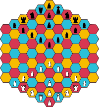
Algorithms
Grid colorings are the basis of many interesting grid algorithms. The coloring algorithm does not return actual colors, but indices that we can use to access an array of colors that we can assign to cells in a grid if that is the goal. But the index also relays some structural information about a cell that can be exploited in algorithms to compute things that have nothing to do with colors.
Algorithm Examples
Prim's maze generation algorithm
This, and many other maze generation algorithms, work on edges. One way of implementing the algorithm is to represent edges and faces in the same grid, as we have done in this example with hex grids, and Game 6 for rect grids. You can use a coloring to decide which cells represent walls and which cells represent faces.
| 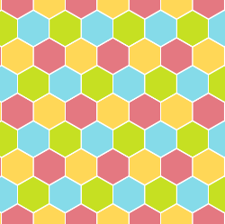 | 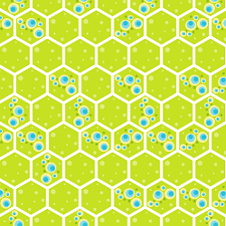 |
|---|
Here, yellow corresponds with definite openings; the other colors correspond with walls (that may be opened by the maze generation algorithm). The color also shows the orientation of the “edge”, for example, all red cells denote vertical edges.
In Algorithms for making more interesting mazes, there are a lot more examples of how grid colorings can be used in maze algorithms.
Implementing triangular, rhombille and floret pentagon grids
A single grid can be used to represent vertices and faces simultaneously. We can use this to assign coordinates to triangular grids that make them much easier to work with (we are investigating this as an alternative for our existing triangular grids, and I will write more on this topic later). In this case, the coloring tells you which cells correspond to faces, and which ones with vertices. It also tells you which cells have up triangles,
| Tri Grid | Rhomb Grid | Floret Pentagon Grid |
|---|---|---|
| 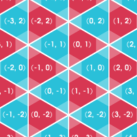 | 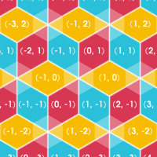 | 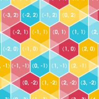 |
- (You can use single grids to represent other combinations of faces, edges and vertices too; and again a coloring helps you decide which cells are which type).
Procedural content
In many games, these colors can help you generate interesting levels or puzzles. The game that inspired Grids uses colorings to generate many of the game’s puzzles.
Sampling
Colorings are useful for low-res grid traversal, or sampling a grid evenly. This is the basis of many procedural algorithms: for instance, you could place elements at points of a regular sample offset by a random amount, giving you a fairly even distribution that is still somewhat unpredictable. Because colorings exist for any number of colors, you can also control the fraction precisely. If you want 20% of your world to be occupied by monsters, you simply use a 5-coloring.
Wrapped Grids
Grid colorings can be used for making look-up tables to wrap grids in non-standard ways. For example, a hex-grid can be wrapped as shown below:
(The interactive example on this page makes it a bit clearer how this wrapping works.)
The method is to
- create a hexagon-shaped grid with the desired size
- calculate the coloring index (for a suitable coloring) for each cell in this grid
- set the value at this index in an array to the associated point
To find out how any point is wrapped, simply look up its coloring, and then the corresponding point in the array.
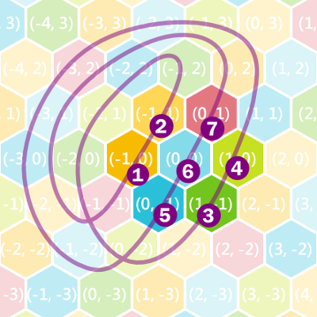
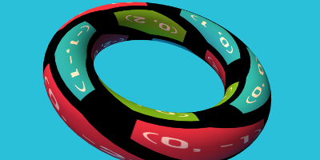
Specifying Colorings
Any repeated pattern in a grid can be specified by finding a (1D, 2D or 3D) parallelogram that contains only one of each color, called the "primitive region".
The only information we need is the three 1, 2 or 3 vectors that describe the unique sides of the parallelogram, with some additional restrictions on the form for 2D and 3D. (These restrictions do not affect the possible colorings.)
| 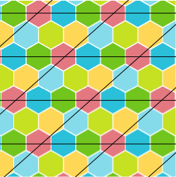 | 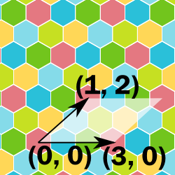 | 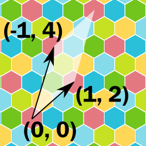 |
|---|
- Even with these constraints it is still possible to specify the same colorings in different ways. This is only a problem if you want to make comparisons based on colorings.
- For 1D, the coloring function is equivalent of taking the modulus of a point.
- No distinction is made between colorings for different grids, for example the same function is used for rect and hex grids. What is different on different grids is how neighbors relate to each other so patterns look different visually, and that have different “meanings” algorithmically. For example, it is possible to apply the checkerboard coloring to a hex grid, but unlike when used on a rect grid, some adjacent cells will have the same color.
| Description | 1D | 2D | 3D |
|---|---|---|---|
| Primitive region | Segment | Parallelogram | Parallelopiped |
| Description | Segment length | Two sides of the parallelogram | Three sides of the parallelopiped |
| Additional constraints | - | One vector parallel to x-axis | One vector parallel to x-axis, and one vector in the XY-plane. |
| Standard form | x0 | (x0, 0), (x1, y1) | (x0, 0, 0), (x1, y1, 0), (x2, y2, z2) |
Note that any integer linear combination of the coloring-vectors added to a point with a certain color, will give a point with the same color. For example, in 2D, if the two coloring vectors are C0 and C1, then for any integers m and n, the vector p + mC0 + nC1 will have the same color as p.
Some Important Colorings
1-Coloring
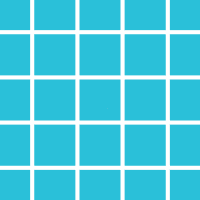
- Description: (1, 0), (0, 1)
- Note: This coloring is not used for anything, but it is an important degenerate case that arises occasionally.
Checkerboard coloring
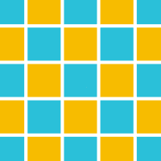
- Description: (2, 0), (1, 1)
- Usage:
- This coloring allows a rectangular grid to be colored with the smallest number of colors so that edge-to-edge neighbors don't match.
- It is used in many square grid games to make boards easier to analyze.
- It is also used in puzzles about dominoes, as a minimum requirement for a set of dominoes to cover a shape is for the shape to have the same number of each color under this coloring.
4-coloring
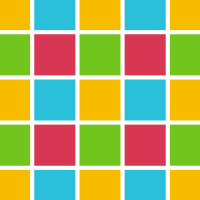
- Description: (2, 0), (0, 2)
- Usage:
- This coloring allows a rectangular grid to be colored with the smallest number of colors so that vertex-neighbors always have different colors.
- It also allows a hexagonal grid to be colored so that any two cells with a hex-distance of 2 or less apart have unique colors.
- For rectangular grids, the coloring is recursive in that 4 cells that make a square each have a unique coloring. Therefore, this coloring plays a role in certain algorithms on quad-trees.
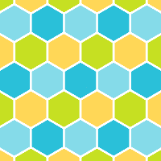
- Usage (Hex Grid):
- In a hex grid, the coloring can be used to assign cells as "center", or one of three wall types depending on the slant. This can be exploited in designing maze algorithms on a hex grid.
- The coloring is also used to represent rhombille grids using hex coordinates: one color corresponds to sharp vertices of the rhombi, and the other three to each of the three types of rhombi according to their orientation.
3-coloring
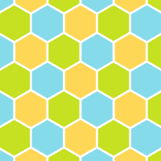
- Description: (3, 0), (1, 2)
- Usage:
- This coloring has the smallest number of colors that allows all neighbors on a hex grid to have different colors.
- Diagonals (as defined in hex-chess) have the same color, and therefore this color scheme is useful for coloring boards to make it easier to make diagonal moves.
7-coloring
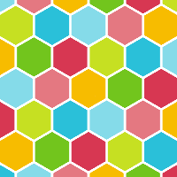
- Description: (7, 0), (1, 4)
- Usage:
- This coloring can be used to represent a floret pentagon grid with hex coordinates.
- One color represents the sharp vertex of pentagons; the other six correspond to the pentagons depending on which of the six orientations it has.
- This coloring is recursive: 7 hexagons in the shape of a hexagon each has a different coloring. Therefore, this coloring is sometimes used in hex sept-trees (similar to quad-trees for rect-grids) and generating iterations of the Gosper curve.
3D 1-Coloring
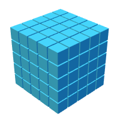
- Description: (1, 0, 0), (0, 1, 0), (0, 0, 1)
- Usage:
- This coloring is not used for anything, but it is an important degenerate case that arises occasionally.
Cube Checkerboard Coloring
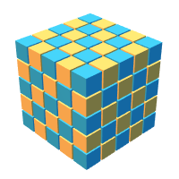
- Description: (2, 0, 0), (1, 1, 0), (0, 1, 1)
- Usage:
- This coloring allows a block-grid to be colored with the smallest number of colors so that edge-neighbors have different colors.
8-coloring
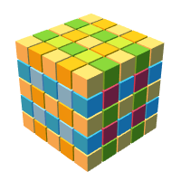
- Description: (2, 0, 0), (0, 2, 0), (0, 0, 2)
- Usage:
- This coloring allows a block-grid to be colored with the smallest number of colors so that vertex-neighbors have different colors.
- It enables the assignment of a cell as one of "center", "XY-face", "XZ-face", "YZ-face", "X-edge", "Y-edge", "Z-edge" or "vertex", useful in some 3D maze generation algorithms and 3D tile designs.
- 8 cells that form a cube will always have distinct colors, giving this coloring a recursive property useful in certain algorithms involving oct-trees.